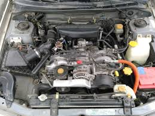

Походження назви та історія
 версії 22B походить від назви генерального спонсора гоночної команди Subaru World Rally Team на той час - табачного бренда State Express 555. П'ятсот п'ятдесят п'ять - це 22B у шістнадцятковій системі числення, яка використовується в комп'ютерному програмуванні. У той час світ ІТ переживав бум, і Impreza була культовою машиною для успішних ІТ-спеціалістів як у Великобританії, так і в Японії. Часом назву 22В трактують як об’єм двигуна, який було збільшено з 2 до 2,2 л, а хтось вважає, що B в назві означає Bilstein, постачальника амортизаторів. Але хто б як не трактував назву версії, Subaru створили справді фантастичну машину.
версії 22B походить від назви генерального спонсора гоночної команди Subaru World Rally Team на той час - табачного бренда State Express 555. П'ятсот п'ятдесят п'ять - це 22B у шістнадцятковій системі числення, яка використовується в комп'ютерному програмуванні. У той час світ ІТ переживав бум, і Impreza була культовою машиною для успішних ІТ-спеціалістів як у Великобританії, так і в Японії. Часом назву 22В трактують як об’єм двигуна, який було збільшено з 2 до 2,2 л, а хтось вважає, що B в назві означає Bilstein, постачальника амортизаторів. Але хто б як не трактував назву версії, Subaru створили справді фантастичну машину.
Створений для святкування 40-річчя марки та для відзнаки третього поспіль титулу WRC серед виробників, STi 22B був представлений як серійна версія вже культового дводверного автомобіля Subaru World Rally Car. З широкими передніми та задніми арками, високим заднім спойлером і унікальним двигуном EJ22, STi 22B був настільки наближений до ралійного автомобіля Коліна МакРея, наскільки можливо було зробити. Це була справжня дорожня репліка ралійного боліда.
Для продажу на внутрішньому ринку Японії було вироблено 399 одиниць 22B, ще 25 було виготовлено для закордонних ринків. Всі вони були продані протягом 48 годин за попередніми замовленнями. Вартість на той час була трохи менша за 40 тис фунтів стерлінгів або 25 тис доларів.
Технічні характеристики
Двигун EJ22
Двигун був не просто стандартним 2-літровим, розточеним до 2,2-літра, EJ22 був побудований на основі блоку окремого лиття. На додаток до двигуна EJ22, 22B міг похвалитися зварними швами кузова (за технологією автомобілів WRC), спеціальною головною передачею, дводисковим гоночним зчепленням, посиленими приводними та карданним валом, регульованим переднім та заднім диференціалом і посиленими гальмами. У підвісці використовувалися унікальні ковані алюмінієві важелі та тяги, спортивні перевернуті амортизатори Bilstein і пружини Eibach та 17-дюймові диски BBS золотистого кольору.
| Технічні характеристики |
| Потужність мотору(к.с при об./хв) |
280/6000 |
| Крутний момент(Н*м при об./хв) |
363/3200 |
| Макс. швидкість |
248 км/год |
| Вага |
1270 кілограм |
| Розгін від 0 до 100 |
5.3 секунди |
По своїй суті Subaru 22B є модифікована Subaru Impreza WRX STi. Сама Impreza не мала кузову купе та якшо порівнювати ці два автомобіля в керованості, то 22B має на голову кращі ходові характеристики ніж 'цивільна' версія цього автомобілю
Джентельменська угода
Теоретично Subaru дотримувалися джентльменської угоди, яка існувала у той час між японськими виробниками автомобілів, включаючи Toyota, Nissan, Subaru і Mitsubishi, щодо обмеження потужності автомобілів, виробляємих для внутрішнього ринку країни до 280 к.с. і 180 км/год, з метою зменшити аварійність та смертність на дорогах. Однак, як потім стало з’ясовуватися з різних джерел, фактична потужність таких моделей, як 22B, R34 GT-R, Evo VI та Supra була вищою за номінальні дані. Тому, хоча потужність 22B офіційно вказано на рівні 276 к.с., реальні світові дані свідчать про те, що фактичне число починається з 3!
Особливості та ціна
Особливість цього екземпляру в тому, що він є одним із трьох автомобілів екстра партії 22B з номером №000/400. Subaru подарували їх в знак подяки за багаторічне партнерство та спортивні досягнення технічному директору команди Девіду Лапворту, штурману Нікі Ґрісту та пілоту Коліну Макрею.
Одного разу в телевізійному інтерв’ю Колін сказав про 22B, що це одна з його улюблених машин, водночас визнаючи, що «вона може змусити похвилюватися» через свій характер. І можна лише уявити як їде ця машина, враховуючи, що Коліну було з чим порівняти.
Цей екземпляр, з пробігом 12 тис кілометрів було продано за 480 500 фунтів стерлінгів, приблизно 582 тис доларів.
З огляду на стале зростання цін на колекційні автомобілі JDM, це безперечно бажаний автомобіль для будь-якої колекції. Доречі, подеякують, що одна така машина є в колекції в Україні.